Yamato (079) (OP16-079)Yamato (079) (OP16-079)
Yamato (079) (OP16-079)Yamato (079) (OP16-079)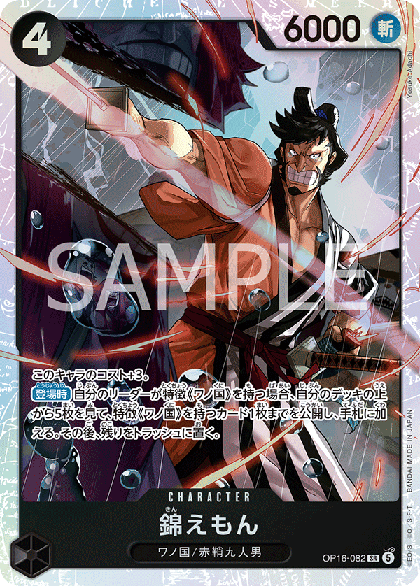
×4×1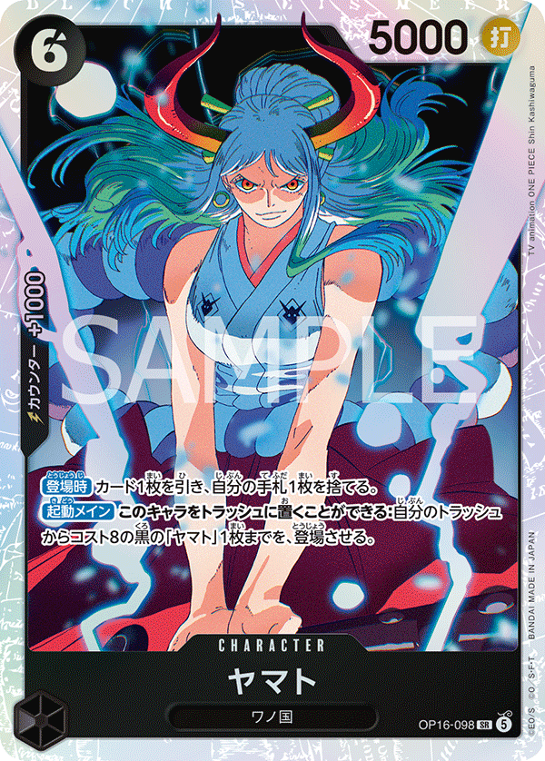
×4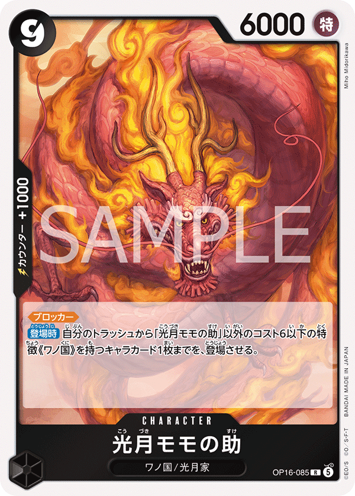
×4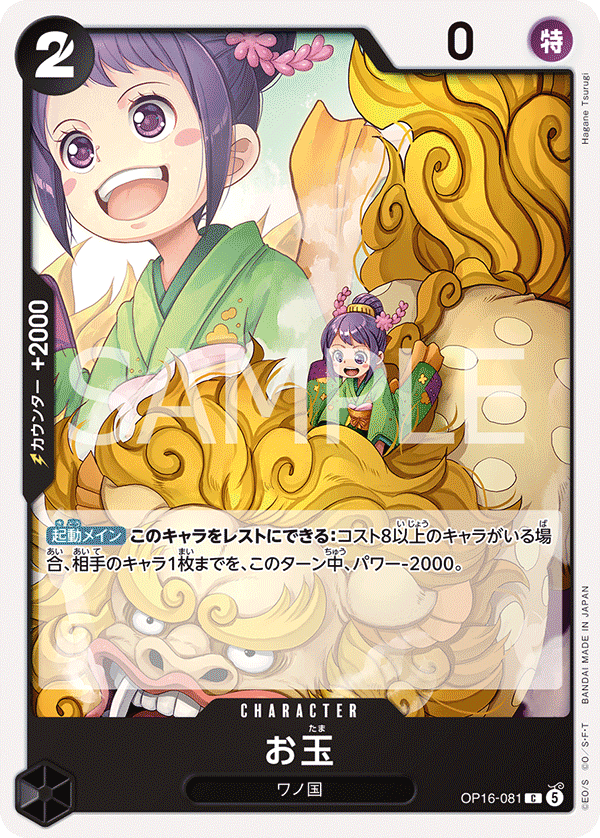
×4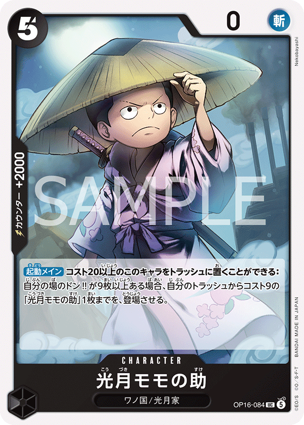
×4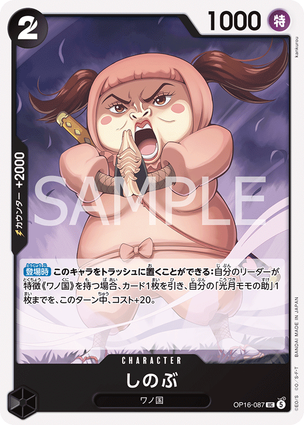
×4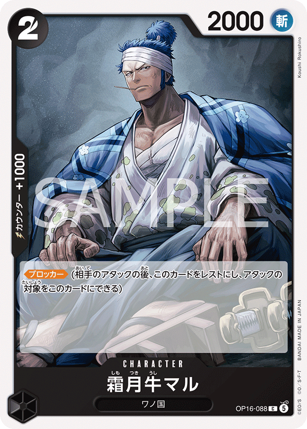
×3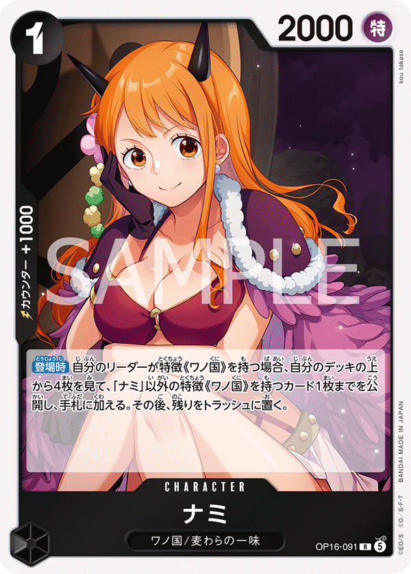
×4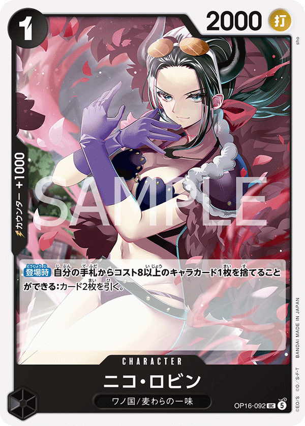
×4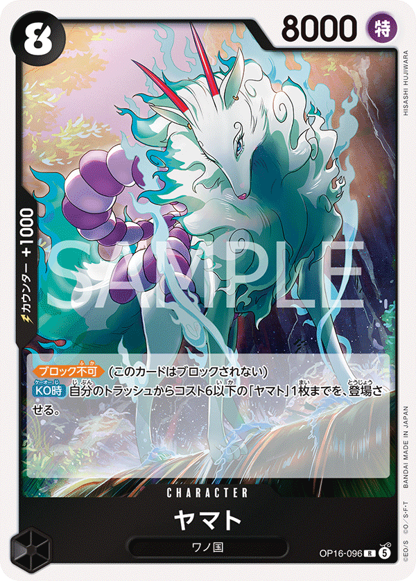
×4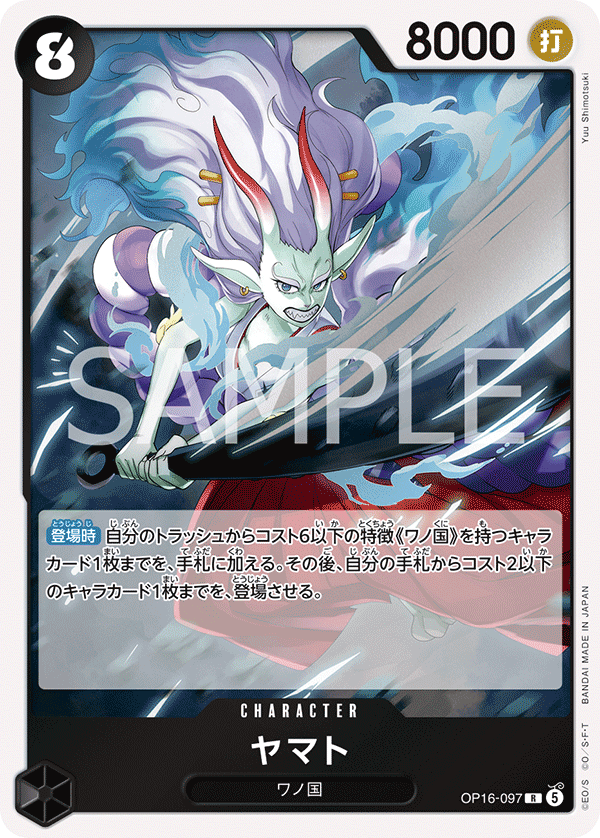
×4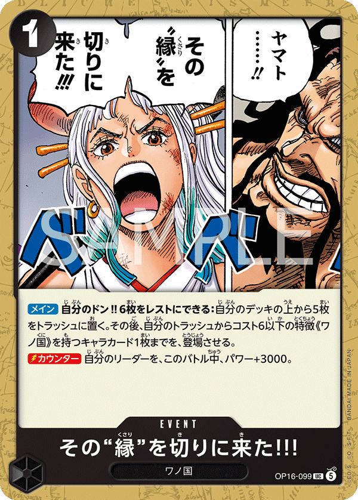
×4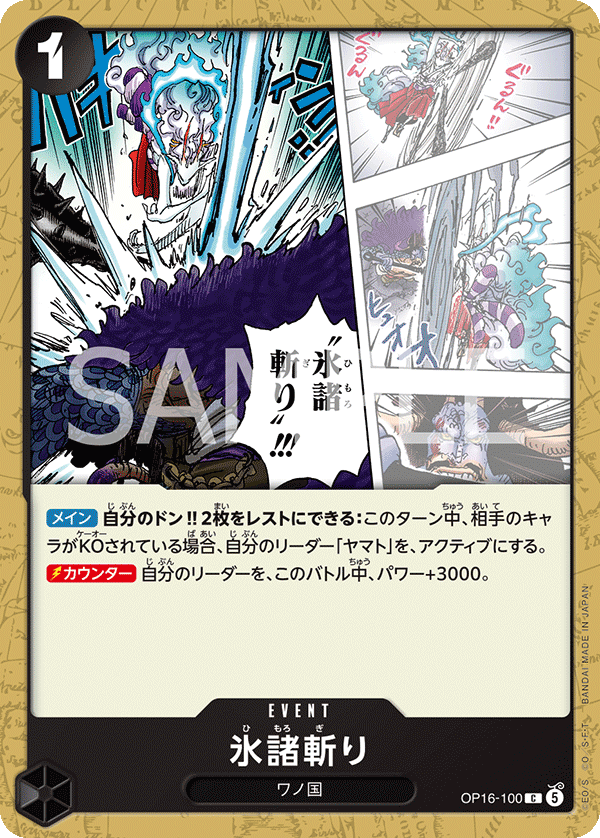
×3
| Turn | Phase | Expected opp | My response | Cards |
|---|---|---|---|---|
| T1 | my_turn | Shanks plays OP09-002 Uta (1c, 2000) or passes. | Develop OP16-091 or OP16-097 (1-cost Wano feed). No attack T1. | OP16-091 OP16-097 |
| T2 | opp_turn | Shanks leader 5000 swings (HITS via tie). 1 attack T2. | Take the hit — 5 life can absorb early. Don't waste +2000 counter on a single 5000 swing. | |
| T3 | my_turn | Shanks deploys OP09-011 Hongo (3c, 3000) or sets up Yasopp T4. | Play OP16-082 Kin'emon (4c, 6000). Swing leader 5000 + 1 DON = 6000 into Shanks 5000 leader (Shanks to 4 life). | OP16-082 |
| T4 | opp_turn | OP09-013 Yasopp SP (5c, 6000, 1000 counter) deploys with On Play. Yasopp swings 6000. Shanks leader 5000 + 1 DON = 6000 swings. | Counter Yasopp 6000: Yamato 5000 + 2000 counter = 7000 > 6000 = fail. Or take 1 hit at 3-4 life. Yamato 5000 + 1000 = 6000 vs 6000 = TIE attacker wins — need +2000 minimum. | OP16-098 OP16-096 |
| T5 | my_turn | Shanks deploys OP12-008 Shanks (4c, 6000) or doubles Yasopp. | Play OP16-098 Yamato (6c, 5000, 1000 counter). Trash-feed. Swing Kin'emon 6000 into Shanks leader 5000 — clean hit (Shanks to 3 life). | OP16-098 OP16-082 |
| T6 | my_turn | OP09-009 Benn.Beckman SP (7c, 7000, 1000 counter) deploys. | Play OP16-085 Kouzuki Momonosuke (9c, 6000, 1000 counter). Multi-swing: Momonosuke 6000 + Kin'emon 6000 + leader 5000 + 2 DON = 7000. Replay a Wano body from trash for [Rush] = 4 attacks. Shanks at 2-3 life is closing window. | OP16-085 OP16-082 OP16-098 |
| T7 | opp_turn | OP06-007 Shanks SP (10c, 12000) lands and swings 12000. 12000 HITS clearly — needs +7000 counter to neutralize (not feasible). | Take the 12000 hit (Yamato to 1-2 life), counter Beckman 7000 with Yamato 5000 + 2000 + 1000 = 8000 > 7000 = fail. Close on your next turn with trash-replay [Rush]. | OP16-098 OP16-096 |
| Turn | Phase | Expected opp | My response | Cards |
|---|---|---|---|---|
| T1 | opp_turn | Shanks plays OP09-002 Uta (1c, 2000) or passes. | Pass. | |
| T2 | my_turn | Shanks leader 5000 swings T2 (HITS via tie). | Deploy OP16-091 or OP16-097. Swing leader 5000 into Shanks leader 5000 — clean trade hit (Shanks to 4 life). | OP16-091 OP16-097 |
| T3 | opp_turn | Shanks deploys OP12-008 Shanks (4c, 6000) and swings leader 6000 (+1 DON). | Counter 6000: Yamato 5000 + 2000 counter = 7000 > 6000 = fail. Or take 1 hit at 4 life. | OP16-098 OP16-096 |
| T4 | my_turn | OP09-013 Yasopp SP (5c, 6000) hits the board. Multi-attack (median 2). | Play OP16-082 Kin'emon (4c, 6000). Swing Kin'emon 6000 into Shanks 5000 leader — clean hit (Shanks to 3-4 life depending on prior trades). | OP16-082 |
| T5 | my_turn | Shanks stacks Yasopp + OP12-008 board. | Play OP16-098 Yamato (6c, 5000, 1000 counter). Trash-feed. Swing leader 5000 + 2 DON = 7000 + Kin'emon 6000 into Shanks leader — force counter stack. | OP16-098 OP16-082 |
| T6 | my_turn | OP09-009 Beckman (7c, 7000) lands. Shanks ramping for OP06-007 T7. | Play OP16-085 Momonosuke (9c, 6000). Triple-swing: Momonosuke 6000 + Kin'emon 6000 + leader 7000. Trash-replay a Wano body for [Rush] = 4th attack. Shanks at 2-3 life. | OP16-085 |
| T7 | opp_turn | OP06-007 Shanks SP (10c, 12000) lethal push. | Take the 12000 hit (can't counter for +7000 realistically). Counter Beckman 7000: Yamato 5000 + 2000 + 1000 = 8000 > 7000 = fail. Stabilize at 1-2 life and close next turn. | OP16-098 OP16-096 |

| Turn | Phase | Expected opp | My response | Cards |
|---|---|---|---|---|
| T1 | my_turn | Rosinante plays OP12-108 Rosinante (1c, 2000) or OP12-071 Pudding (1c, 2000). No attack T1. | Develop OP16-091 or OP16-097 to start trash density. | OP16-091 OP16-097 |
| T2 | opp_turn | Rosinante leader 5000 swings (HITS Yamato 5000 via tie). 1 attack T2. | Take the hit — 5 life can absorb. Save counters for T5 EB04-038 push. | |
| T3 | my_turn | Rosinante deploys OP12-063 Vinsmoke Reiju (4c, 5000) or P-088 Trafalgar Law (4c, 5000). | Play OP16-082 Kin'emon (4c, 6000). Swing leader 5000 + 1 DON = 6000 into Rosinante leader 5000 (Rosinante to 3 life). | OP16-082 |
| T4 | opp_turn | P-093 Trafalgar Law (4c, 6000) lands and swings 6000. Multi-attack (median 1-2). | Counter the 6000: Yamato 5000 + 2000 counter = 7000 > 6000 = fail. Or take the hit at 3-4 life still safe. | OP16-098 OP16-096 |
| T5 | my_turn | EB04-038 Rosinante & Law (6c, 8000) ramps onto board. | Play OP16-098 Yamato (6c, 5000, 1000 counter). Trash-feed. Swing Kin'emon 6000 into Rosinante leader 5000 — clean hit (Rosinante to 2 life). | OP16-098 OP16-082 |
| T6 | my_turn | EB03-062 Trafalgar Law (8c, 6000) deploys as late closer. EB04-038 (8000) on board. | Play OP16-085 Kouzuki Momonosuke (9c, 6000, 1000 counter). Stack swings: Momonosuke 6000 + Kin'emon 6000 + leader 5000 + 2 DON = 7000. Trash-replay Wano [Rush] for extra attack. Rosinante at 1-2 life closing window. | OP16-085 OP16-082 OP16-098 |
| T7 | opp_turn | EB04-038 Rosinante & Law (8000) + EB03-062 Law (6000) + leader push for stabilization or lethal. | Counter EB04-038's 8000: Yamato 5000 + 2000 + 2000 = 9000 > 8000 = fail. Take 1 hit at 1-2 life, close on your turn with trash-replay [Rush]. | OP16-098 OP16-096 |
| Turn | Phase | Expected opp | My response | Cards |
|---|---|---|---|---|
| T1 | opp_turn | Rosinante plays OP12-108 or OP12-071. No attack T1. | Pass. | |
| T2 | my_turn | Rosinante leader 5000 swings (HITS via tie). | Deploy OP16-091 or OP16-097. Swing leader 5000 into Rosinante leader 5000 — clean trade hit (Rosinante to 3 life). | OP16-091 OP16-097 |
| T3 | opp_turn | Rosinante deploys OP12-063 Reiju (4c, 5000) or P-088 Law. Leader swing 5000-6000. | Counter 6000: Yamato 5000 + 2000 = 7000 > 6000 = fail. | OP16-098 OP16-096 |
| T4 | my_turn | P-093 Law (4c, 6000) on board. Multi-attack (median 2). | Play OP16-082 Kin'emon. Swing Kin'emon 6000 into Rosinante leader 5000 — clean hit (Rosinante to 2-3 life). | OP16-082 |
| T5 | my_turn | EB04-038 Rosinante & Law (6c, 8000) ramps. | Play OP16-098 Yamato. Trash-feed. Swing leader 5000 + 2 DON = 7000 + Kin'emon 6000 into Rosinante leader. | OP16-098 OP16-082 |
| T6 | my_turn | EB04-038 (8000) + EB03-062 Law (8c, 6000) closing setup. | Play OP16-085 Momonosuke. Trash-replay Wano [Rush] for extra attack. Triple-swing closes. | OP16-085 |
| T7 | opp_turn | Rosinante lethal stabilization push. | Counter 8000 EB04-038: Yamato 5000 + 2000 + 2000 = 9000 > 8000 = fail. Counter 6000s: Yamato 5000 + 2000 = 7000 > 6000 = fail. | OP16-098 OP16-096 |

| Turn | Phase | Expected opp | My response | Cards |
|---|---|---|---|---|
| T1 | my_turn | Enel plays OP15-067 Shura (1c, 2000) or OP15-061 Ohm (1c, 2000). No attack T1. | Develop OP16-091 or OP16-097 (1-cost Wano feed). | OP16-091 OP16-097 |
| T2 | opp_turn | Enel leader 5000 swings (HITS Yamato 5000 via tie). 1 attack T2. | Take the hit — 5 life can absorb. Save counters for OP15-118 (8000) on T6. | |
| T3 | my_turn | Enel deploys 3-4 cost Sky Island bodies. Enel has 5 DON on T3 going first (with 6-cap). | Play OP16-082 Kin'emon (4c, 6000). Swing leader 5000 + 1 DON = 6000 into Enel 5000 leader (Enel to 4 life). | OP16-082 |
| T4 | opp_turn | Enel deploys OP15-114 Wyper (5c, 6000) or develops further. Multi-attack (median 1-2). 6000 swings HIT clearly. | Counter the 6000s: Yamato 5000 + 2000 counter = 7000 > 6000 = fail. Or take a hit and save for T6 OP15-118. | OP16-098 OP16-096 |
| T5 | my_turn | Enel hits 6-DON cap and stays there. Sets up OP15-118 (6c, 8000) for T6. | Play OP16-098 Yamato (6c, 5000, 1000 counter). Trash-feed. Swing Kin'emon 6000 into Enel leader for clean hit (Enel to 3 life). | OP16-098 OP16-082 |
| T6 | my_turn | OP15-118 Enel (6c, 8000) lands. Effect-immune at 6-or-less DON per rules_truth.md §1. | Play OP16-085 Kouzuki Momonosuke (9c, 6000). Stack Wano bodies: Momonosuke 6000 + Kin'emon 6000 + trash-replay Wano [Rush] body. To KO OP15-118 (8000) need 8000+ in combat — Kin'emon 6000 + 2 DON = 8000 vs OP15-118 8000 = TIE attacker wins (Kin'emon trades with Enel character). Combat KO works. | OP16-085 OP16-082 OP16-098 |
| T7 | opp_turn | OP15-118 Enel (8000) + leader 5000 + OP15-114 Wyper (6000) push for lethal. Enel may also play OP15-092 Luffy (7c, 7000). | Counter OP15-118's 8000 swing: Yamato 5000 + 2000 + 2000 = 9000 > 8000 = fail. Or take 1 hit at 2-3 life and close on your turn. | OP16-098 OP16-096 |
| Turn | Phase | Expected opp | My response | Cards |
|---|---|---|---|---|
| T1 | opp_turn | Enel plays OP15-067 Shura or OP15-061 Ohm. No attack T1. | Pass. | |
| T2 | my_turn | Enel leader 5000 swings (HITS via tie). | Deploy OP16-091 or OP16-097. Swing leader 5000 into Enel leader 5000 — clean trade hit (Enel to 4 life). | OP16-091 OP16-097 |
| T3 | opp_turn | Enel deploys 4-cost Sky Island body. Leader swing 5000-6000 (+1 DON pump). | Counter 6000 swing: Yamato 5000 + 2000 = 7000 > 6000 = fail. | OP16-098 OP16-096 |
| T4 | my_turn | OP15-114 Wyper (5c, 6000) on board. Multi-attack (median 2). | Play OP16-082 Kin'emon (4c, 6000). Swing Kin'emon 6000 into Enel leader 5000 — clean hit (Enel to 3-4 life). | OP16-082 |
| T5 | my_turn | Enel ramps to 6-DON cap, sets up OP15-118 T6. | Play OP16-098 Yamato. Trash-feed. Swing leader 5000 + 2 DON = 7000 + Kin'emon 6000 into Enel leader for stacked pressure. | OP16-098 OP16-082 |
| T6 | my_turn | OP15-118 Enel (6c, 8000) lands. | Play OP16-085 Momonosuke. To KO OP15-118 need 8000+ in combat: Kin'emon 6000 + 2 DON = 8000 vs 8000 = TIE attacker wins (Kin'emon trades, Enel KO'd). Trash-replay Wano [Rush] for extra leader swing. | OP16-085 OP16-082 |
| T7 | opp_turn | Enel lethal push: OP15-118 + OP15-092 + leader. | Counter OP15-118 8000 with Yamato 5000 + 2000 + 2000 = 9000 > 8000 = fail. Or take 1 hit, close on your turn with [Rush] replay. | OP16-098 OP16-096 |

| Turn | Phase | Expected opp | My response | Cards |
|---|---|---|---|---|
| T1 | my_turn | Luffy plays 1-cost setup. No attack T1. | Develop OP16-091 or OP16-097 to start trash density. | OP16-091 OP16-097 |
| T2 | opp_turn | Luffy leader 5000 swings (HITS via tie). 1 attack T2. | Take the hit at 5 life — drop to 4 is safe. Don't burn counters on a 5000. | |
| T3 | my_turn | Luffy deploys a 4-cost Green/Blue body. | Play OP16-082 Kin'emon (4c, 6000). Swing leader 5000 + 1 DON = 6000 into Luffy leader 5000 (Luffy to 3 life). | OP16-082 |
| T4 | opp_turn | Luffy multi-attack pressure (median 2). Bounce/rest tools target your Kin'emon. | If Kin'emon gets bounced to hand, replay it next turn but trash-recursion is broken (hand-card not trash-card). Counter their 6000 swings: Yamato 5000 + 2000 counter = 7000 > 6000 = fail. | OP16-098 OP16-096 |
| T5 | my_turn | Luffy stacks board + bounce disruption. | Play OP16-098 Yamato (6c, 5000, 1000 counter). Trash-feed aggressively to load Wano cards into trash for [Rush] replay even if Kin'emon gets bounced. Swing Kin'emon (if alive) 6000 into Luffy leader — Luffy to 2 life. | OP16-098 OP16-082 |
| T6 | my_turn | Luffy pushes lethal setup with multi-body bounce/rest combo. | Play OP16-085 Kouzuki Momonosuke (9c, 6000). Trash-replay a Wano body for [Rush] = additional attack. Stack Momonosuke 6000 + Kin'emon (if alive) 6000 + leader 7000 (5000 + 2 DON). Luffy at 1-2 life. | OP16-085 OP16-082 |
| T7 | opp_turn | Luffy lethal push with multi-attack and bounce-cleared board. | Counter 6000 swings: Yamato 5000 + 2000 = 7000 > 6000 = fail. Take 1 hit at 2-3 life, close on your turn with trash-replay [Rush] for finishing damage. | OP16-098 OP16-096 |
| Turn | Phase | Expected opp | My response | Cards |
|---|---|---|---|---|
| T1 | opp_turn | Luffy plays 1-cost setup. No attack T1. | Pass. | |
| T2 | my_turn | Luffy leader 5000 swings (HITS via tie). | Deploy OP16-091 or OP16-097. Swing leader 5000 into Luffy leader 5000 — clean trade hit (Luffy to 3 life). | OP16-091 OP16-097 |
| T3 | opp_turn | Luffy deploys 4-cost Green/Blue body, may bounce/rest your 1-cost. | Counter or take a 6000 swing — Yamato 5000 + 2000 counter = 7000 > 6000 = fail. | OP16-098 OP16-096 |
| T4 | my_turn | Multi-attack (median 2). Bounce disruption on your board. | Play OP16-082 Kin'emon. Swing Kin'emon 6000 into Luffy leader 5000 — clean hit (Luffy to 2-3 life). | OP16-082 |
| T5 | my_turn | Luffy stacks bounce/rest tools. | Play OP16-098 Yamato (6c, 5000, 1000 counter). Trash-feed for [Rush] replay setup. Swing leader 5000 + 2 DON = 7000 + Kin'emon 6000 (if alive). | OP16-098 OP16-082 |
| T6 | my_turn | Luffy lethal setup with multi-body bounce combo. | Play OP16-085 Momonosuke. Trash-replay Wano for [Rush] = extra attack. Push triple-swing. | OP16-085 |
| T7 | opp_turn | Luffy multi-attack lethal push. | Counter 6000 swings: Yamato 5000 + 2000 = 7000 > 6000 = fail. Stabilize, close next turn. | OP16-098 OP16-096 |
| Turn | Phase | Expected opp | My response | Cards |
|---|---|---|---|---|
| T1 | my_turn | Opp plays OP16-091 or OP16-097 (1-cost Wano feed). No attack T1. | Develop a 1-cost Wano body to start trash density. No swing. | OP16-091 OP16-097 |
| T2 | opp_turn | Opp Yamato leader 5000 swings (HITS via tie). 1 attack T2. | Take the hit — 5 life means a T2 swing drop to 4 is safe. Don't burn counter cards on a 5000 swing. | |
| T3 | my_turn | Opp develops OP16-082 Kin'emon (4c, 6000) and may swing leader 5000. | Play OP16-082 Kin'emon. Swing leader 5000 + 1 DON = 6000 into opp leader 5000 for clean hit (opp to 4 life). | OP16-082 |
| T4 | opp_turn | Opp Kin'emon 6000 swings + leader 5000. 6000 HITS clearly. | Counter the 6000: Yamato 5000 + 2000 counter = 7000 > 6000 = fail. Yamato 5000 + 1000 counter = 6000 vs 6000 = TIE attacker wins, so need +2000. | OP16-098 OP16-096 |
| T5 | my_turn | Opp develops OP16-098 Yamato (6c, 5000) and continues board build. | Play OP16-098 Yamato. Discard a Wano card to load trash. Swing leader 5000 + 2 DON = 7000 + Kin'emon 6000 into opp leader. | OP16-098 OP16-082 |
| T6 | my_turn | Opp ramps toward OP16-085 Momonosuke (9c, 6000) deployment. | Play OP16-085 Kouzuki Momonosuke (9c, 6000). With Wano in trash, replay a body from trash for [Rush] — triple-swing push. | OP16-085 |
| T7 | opp_turn | Opp Momonosuke + Kin'emon + leader stack 3 attacks. Opp at 2-3 life. | Counter their leader 5000 + 2 DON = 7000 swing: Yamato 5000 + 2000 counter = 7000 vs 7000 = TIE attacker wins, need +3000 to actually fail. Take 1 hit and close on your turn. | OP16-098 OP16-096 |
| Turn | Phase | Expected opp | My response | Cards |
|---|---|---|---|---|
| T1 | opp_turn | Opp plays 1-cost Wano body. No attack T1. | Pass. | |
| T2 | my_turn | Opp Yamato leader 5000 swings (HITS via tie). | You have 4 DON. Develop OP16-091 or OP16-097. Swing leader 5000 into opp leader 5000 — clean trade hit (opp to 4 life). | OP16-091 OP16-097 |
| T3 | opp_turn | Opp deploys OP16-082 Kin'emon (4c, 6000). Leader swing 5000-6000. | Counter 6000 swings: Yamato 5000 + 2000 = 7000 > 6000 = fail. Take 5000 swings — 5 life buffer absorbs. | OP16-098 OP16-096 |
| T4 | my_turn | Opp has Kin'emon + 1-cost on board, may multi-attack (median 2). | Play OP16-082 Kin'emon yourself. Swing Kin'emon 6000 into opp leader 5000 — clean hit. | OP16-082 |
| T5 | my_turn | Opp ramping toward OP16-085 Momonosuke. | Play OP16-098 Yamato (6c, 5000, 1000 counter). Trash-feed a Wano body. Swing leader 5000 + 2 DON = 7000 + Kin'emon 6000 into opp leader. | OP16-098 OP16-082 |
| T6 | my_turn | Opp lands OP16-085 Momonosuke (9c, 6000). | Play your own OP16-085 Momonosuke. Match their finisher and chain trash-replay [Rush] for triple-swing push. | OP16-085 |
| T7 | opp_turn | Opp pushes lethal — Momonosuke + Kin'emon + leader. | Counter the 6000 swings: Yamato 5000 + 2000 counter = 7000 > 6000 = fail. Take 1 hit at 2-3 life, close on your turn with trash-replay [Rush]. | OP16-098 OP16-096 |

| Turn | Phase | Expected opp | My response | Cards |
|---|---|---|---|---|
| T1 | my_turn | Teach plays OP09-095 Laffitte (1c, 1000, 1000 counter) or passes. No attack T1. | Develop a 1-cost Wano body that feeds the trash later. No swing yet. | OP16-091 OP16-097 |
| T2 | opp_turn | Teach leader 5000 swings into Yamato leader 5000 — HITS via tie (you take 1 life, drop to 4). | Take the hit — 5 life means you can absorb early body shots without burning counters. Teach has no Trigger-redirect target yet anyway because no characters are on board. | |
| T3 | my_turn | Teach deploys OP16-108 or OP09-099 and may swing leader 5000. | Play OP16-082 Kin'emon (4c, 6000). Swing Yamato leader 5000 + 1 DON = 6000 into Teach 5000 leader — clean hit (Teach to 3 life). Force Teach to spend a [Trigger] redirect or eat damage. | OP16-082 OP16-091 |
| T4 | opp_turn | EB04-058 Borsalino (5c, 6000) or OP15-114 Wyper (5c, 6000) lands and swings 6000. Teach may redirect your Kin'emon attack with a [Trigger] discard. | Counter the 6000 swing: Yamato 5000 + 1000 counter (OP16-098 Yamato counter or any 1000-counter Wano body) = 6000 vs 6000 = TIE, attacker wins — need +2000 minimum to actually fail it. Either stack +2000 counter density or take the hit (you're at 3-4 life, still safe). | OP16-098 OP16-096 |
| T5 | my_turn | Teach develops a second 5-6 cost body, ramping toward OP09-093 Teach (10c, 12000) on T6. | Play OP16-098 Yamato (6c, 5000, 1000 counter). Discard a Wano body to feed the trash, then if a Wano card hits trash this turn the recursion can replay with [Rush]. Swing Kin'emon 6000 into Teach 5000 leader for clean hit (Teach to 2 life). | OP16-098 OP16-082 |
| T6 | my_turn | OP09-093 Teach (10c, 12000) lands as their finisher. 12000 swing into Yamato 5000 leader HITS heavily (need +7000 counter to fail — not realistic). | Play OP16-085 Kouzuki Momonosuke (9c, 6000, 1000 counter) — the deck's finisher. Swing leader 5000 + 2 DON = 7000 into Teach 5000 leader (clean hit, Teach to 1 life). Stack Kin'emon 6000 + Momonosuke 6000 + leader 7000 = 3 attacks; Teach at 4 life has been wearing redirect tax all game. | OP16-085 OP16-082 OP16-098 |
| T7 | opp_turn | OP09-093 Teach 12000 swings at Yamato leader for lethal push. | Counter the 12000 swing requires +7000 of counter — usually not feasible. Take the hit (Yamato to 1-2 life) and close on your next turn by replaying a Wano body from trash with [Rush] to finish Teach (1 life remaining). | OP16-098 OP16-096 |
| Turn | Phase | Expected opp | My response | Cards |
|---|---|---|---|---|
| T1 | opp_turn | Teach plays OP09-095 Laffitte (1c). No attack T1. | Pass — going second means you draw on T1 but get 2 DON on T2 first. | |
| T2 | my_turn | Teach leader 5000 swings on its T2 (HITS Yamato 5000 via tie). | Deploy OP16-091 or OP16-097 (1-cost Wano feed) and develop. Swing Yamato leader 5000 into Teach 5000 leader — clean trade hit (Teach to 3). | OP16-091 OP16-097 |
| T3 | opp_turn | Teach deploys OP16-108 and swings leader 5000 or 6000 (+1 DON pump). | Counter a 6000 swing: Yamato 5000 + 2000 counter = 7000 > 6000 = fail. Or take the hit at 4 life still safe. | OP16-098 OP16-096 |
| T4 | my_turn | Teach has 2 bodies developed, may push multi-attack (median 1-2). | Play OP16-082 Kin'emon (4c, 6000). Swing Kin'emon 6000 into Teach 5000 leader for clean hit (Teach to 2-3 life depending on trades). | OP16-082 OP16-091 |
| T5 | my_turn | Teach ramps toward OP09-093 Teach (10c, 12000) deployment. | Play OP16-098 Yamato (6c, 5000, 1000 counter). Discard a Wano character to load trash. Swing leader 5000 + 2 DON = 7000 + Kin'emon 6000 into Teach for compounding pressure. | OP16-098 OP16-082 |
| T6 | my_turn | OP09-093 Teach (10c, 12000) lands. | Play OP16-085 Kouzuki Momonosuke (9c, 6000, 1000 counter). Triple swing: Momonosuke 6000 + Kin'emon 6000 + leader 7000 (5000 + 2 DON). Teach has 4 life and one Trigger-redirect per turn — they cannot stop all three. | OP16-085 OP16-082 |
| T7 | opp_turn | OP09-093 Teach 12000 push for lethal. | Counter where possible — Yamato 5000 + 2000 counter = 7000 holds 6000 swings but not 12000. Take 1 hit at 2-3 life, then on your turn replay a Wano body from trash with [Rush] to close. | OP16-098 OP16-096 |